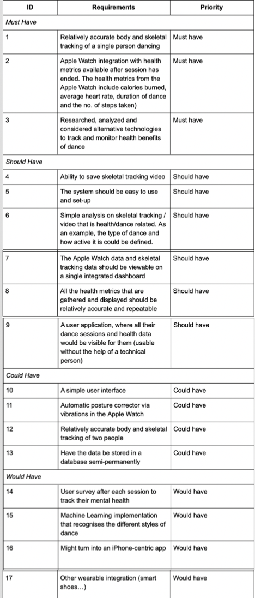

Requirements
Project Background
Arthur Murray dance studios would like to give their clients the ability to track their health whilst dancing. The purpose of this project is to research, identify and apply alternative technologies that can be used in this process to show the students the health benefits of dancing.
Requirement gathering
We collected the requirements through several phone interview with the client. We conducted them as semi-structured interviews for the following reasons… reasons here. The client also gave us a couple of use cases which helped us with designing personas and describing the project goals.
In our process we also introduced the client to alternative technologies that can be used and gave him a full description and evaluation of the differences.
At the end of this process, we prepared several documents where the requirements where outlined, including a MoSCoW list, Project Goals, Personas, Risks Assessment & Evaluation and more, to double-check with the client. We have done communicated these documents to our client via a presentation, which we presented on an Ad-Hoc call to get a “green light” for the project. Everything went well and our project requirements where approved.
Finally, we made sure to include on our bi-weekly call agenda, to briefly go through every requirement, describe the status and re-prioritize or add new requirements if the client needed so, as we were taking an agile development approach.
Personas & Scenarios (used from HCI coursework)
See the HCI - personas and scenarios page by clicking on this link.
Project Goals
- Research different wearables and devices that could be used to track health metrics
- Use 3D cameras to capture body tracking and extract health metrics from this video
- Use the Apple Watch to extract health metrics when dancing
MoSCoW Requirements List
Use Case Diagram